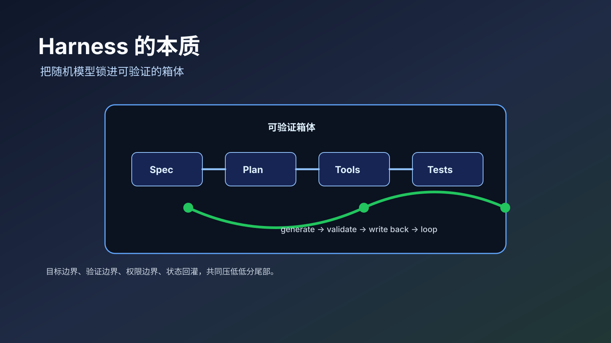

Harness 的本质：把随机模型锁进可验证的箱体
把大模型当成一个确定性函数，很容易高估它。更合适的工程抽象是：模型在当前上下文、参数和工具环境给出的概率空间里，采样出一个看起来最合适的结果。
这意味着同一个模型在同一类任务上的能力并不是一个点，而是一段分布。一个平均能做 70 分的模型，在某个具体任务上可能落到 50 分，也可能冲到 90 分。Harness Engineering 的价值，不是把 70 分模型魔法般变成 95 分模型，而是把它的行为压进一个更小、更可验证的区间，让低分尾部少出现，让高分路径更容易复现。

这个区间可以叫“箱体”。Spec、测试、工具、循环、权限、外部状态、子 Agent、hook，都是箱体的不同面。没有箱体时，模型在荒野里寻路；有箱体时，模型在一条被标出边界和检查点的路线上前进。
flowchart TB
A[用户目标] --> B[Spec: 目标 / 非目标 / 边界]
B --> C[Plan / Tasks]
C --> D[模型生成候选方案]
D --> E[确定性工具: 编译 / 测试 / schema / 日志]
E --> F{验证通过}
F -->|否| G[失败证据写回]
G --> B
F -->|是| H[状态持久化 / 提交 / 交接]
H --> I[下一轮上下文回灌]
I --> C模型不是函数，而是概率场
OpenAI 的 reproducible outputs 文档把一个事实说得很直白：Chat Completions 和 Completions API 默认是非确定性的；即使设置 seed、保持参数和 system_fingerprint 一致，也只是“mostly deterministic”，仍然存在输出不同的小概率。这不是实现瑕疵，而是生成式模型的工作形态。
Nature 2024 年的论文《Larger and more instructable language models become less reliable》给了另一个侧面：更大、更听指令的模型能解决更难的问题，但不会自动把低难度区域全部锁死。它们仍会在简单题上犯错，也会因为问题表述细微变化给出不同答案。论文里提到的加法例子很典型：模型可能会让用户误以为“这已经在它的稳定能力范围内”，然后在一个很普通的加法提示上失败。
工程上要接受这个前提：模型能力不是一条确定边界，而是一片概率地形。裸模型的输出像在这片地形上找路，模型越强，越有续航、越会识别地貌，但它仍可能绕圈、误入岔路，或者在看似简单的地方踩空。
这个视角会改变问题定义。问题不再是“模型到底会不会”，而是：
| 工程问题 | 真实含义 |
|---|---|
| 模型能不能做 | 分布的均值是否足够高 |
| 模型靠不靠谱 | 分布的方差是否足够小 |
| 能不能上线 | 低分尾部是否被验证和兜底机制拦住 |
| 能不能长程执行 | 跨上下文后是否仍能回到同一个目标分布 |
Harness 的工作就是移动这个分布：提高均值，压低方差，切掉不可接受的低分尾部。
CoT 是最早的微型 Harness
Chain-of-Thought Prompting 论文证明了一件很重要的事：给模型几个中间推理步骤示例，能显著提升大模型在算术、常识和符号推理任务上的表现。这个结果经常被理解为“模型学会了推理”，但从工程角度看，它更像是第一个微型 Harness。
CoT 没有改变模型权重，也没有给模型接入外部计算器。它只是把模型带进一个更有利的上下文轨道：先分解、再推导、最后回答。原本模型可能直接跳到答案，现在它被要求沿着一条局部可观察的轨迹走。
这正是 Harness 的基本动作：不试图在每次采样时祈祷模型自然选中好路径，而是把好路径的形状注入上下文，让它更容易走到想要的区域。
从这个角度看，CoT、few-shot、system prompt、rubric、checklist 都属于同一个家族。它们不是“让模型变聪明”的咒语，而是改变采样空间的边界条件。边界越贴近任务，模型越少把 token 浪费在无关探索上。
Spec 是任务箱体的边界
Spec-Driven Development 把这件事推进了一层。GitHub Spec Kit 对 SDD 的定义是：在 AI 辅助开发中把 specification 放到中心位置，流程从 Spec 到 Plan，再到 Tasks 和 Implement；每个阶段产生 Markdown artifact，作为下一阶段的结构化上下文。
这套流程的关键不是“多写文档”，而是把任务从自然语言愿望变成可继承的工程资产。
一个有效 spec 至少给模型三类边界：
| 边界 | 作用 | 典型形态 |
|---|---|---|
| 目标边界 | 哪些结果算完成 | user story、验收条件、成功示例 |
| 非目标边界 | 哪些东西明确不做 | non-goals、禁止改动范围、兼容性要求 |
| 验证边界 | 怎么判断没有跑偏 | 单测、E2E、截图、schema、人工 checklist |
SWE-bench 的演进很能说明问题。ICLR 2024 的 SWE-bench 把真实 GitHub issue、仓库和测试组合成软件工程评测，但早期模型只能解决很少一部分问题。OpenAI 后来发布 SWE-bench Verified，不是因为模型变了，而是因为原始 benchmark 中存在问题描述欠规格化、测试过窄或环境不稳定等噪声。OpenAI 进一步在 2026 年停止报告 SWE-bench Verified 分数，原因之一仍然是测试可能拒绝功能正确的提交。
这件事反过来证明了 spec 和 test 的地位：它们不是附属物，而是模型行为的坐标系。测试写错，模型会被错误地惩罚；spec 缺失，模型会在多个有效解释之间随机选一个；验收条件太窄，模型可能被训练成迎合实现细节而不是解决问题。
好的 spec 是优势法则。它告诉模型，在当前这片地形里，哪些方向比训练数据里的平均经验更值得走。
小系统是大系统的种子
复杂系统不能靠一句话直接生成。一个排序函数可以由一句话加一个测试说清楚，一个 CRM 系统不行。差别不在于模型是否“理解 CRM”，而在于一句话给出的约束密度远远不够。
在单个上下文窗口里，早期上下文对任务框架有很强的定调作用；但长上下文并不等于所有位置的信息都被同等使用。《Lost in the Middle》发现，模型对长上下文中的信息位置很敏感，相关信息放在开头或结尾时表现通常更好，放在中间时可能显著退化。
所以，长程 Agent 的关键动作不是把所有信息塞满，而是在上下文早期构造一个精确的小系统：
- 目标是什么
- 不是目标的东西是什么
- 现有系统有哪些不可破坏的边界
- 完成后必须通过哪些验证
- 如果失败，怎样回滚和继续
这个小系统随后被延长成大系统。Spec 放在外部存储里，随时可以作为 tool result 被重新插入上下文尾部；测试也在早期被设计出来，后面每轮实现都要回到测试面前对账；循环和 hook 把一个有限上下文接到下一个有限上下文上。
这就是“no human in the loop”能成立的最低条件。不是人类完全消失，而是目标、边界和验证不再靠人类实时记忆维持。模型每次偏离时，外部 spec 和测试能把它重新拉回同一个箱体。
注意力预算需要降维
复杂任务还有一个更朴素的问题：模型的注意力会互相稀释。
可以想象一个人站在房间中央，要把四面墙都涂黑。如果他一会儿向左、一会儿向右、一会儿抬头、一会儿低头，运动方向会互相抵消，最后每面墙都只涂了一半。把任务分成四个人，每个人只负责一面墙，单个方向上的预算反而更充分。
Agent teams 的基础思想也是如此。Anthropic 在 multi-agent research system 文章里给出过很清晰的解释：subagents 用各自独立的上下文窗口并行探索问题的不同方面，再把重要 token 压缩回 lead agent。它们带来的不是“更多人格”，而是上下文隔离、职责分离和并行 token 预算。Anthropic 的内部研究评测中，多 Agent 研究系统比单 Agent Claude Opus 4 高 90.2%；同时也承认这种系统 token 消耗很高，普通 Agent 大约是聊天的 4 倍，多 Agent 可到 15 倍。
这说明多 Agent 不是免费午餐。它是一种注意力预算优化：当任务天然可拆、信息超过单一上下文、探索方向相互独立时，多 Agent 值得；当任务强依赖同一上下文、实时协调成本很高时，多 Agent 可能只是更贵的混乱。
工程里常见的两种降维方式可以组合使用：
| 降维方式 | 做法 | 适合场景 |
|---|---|---|
| 阶段降维 | 先 plan，再 build，再 verify，每阶段屏蔽其他角色 | 需求清晰但步骤长的任务 |
| 模块降维 | 把系统拆成小模块，每个模块有独立边界和测试 | 多文件、多子系统、可并行开发 |
阶段降维让模型在每个阶段只做一种事。模块降维让模型在每个工作单元里只面对一个小世界。二者共同减少“同时向四面墙涂色”的浪费。
上下文换入换出是箱体的供料系统
Harness 不只规定模型怎么做，也规定模型每一轮能看见什么。Spec、测试、外部状态和 session summary 都是上下文供料系统的一部分。更完整的讨论放在 《上下文换入换出：下一代 scaling》；本文只保留控制层结论：如果目标和验证不在外部稳定存在，长程任务就会退回到模型的短期注意力里。
所以，一个可运行的 Harness 至少要同时回答两件事：边界在哪里，下一轮怎样重新拿到这些边界。前者是 spec，后者是 context paging。只有边界，没有回灌，模型会在长任务里忘掉边界；只有回灌，没有边界，模型会把更多噪声带进下一轮。
确定性工作必须交给确定性工具
模型的概率工作模式决定了另一条边界：确定性任务不应该交给裸模型承担最终责任。
这不是说模型一定算不对 1 + 1。关键问题是，模型不是以传统程序的方式执行加法算法。关于 LLM 算术的研究已经反复指出，大模型在复杂算术和精确数值任务上仍会出现不稳定；《Arithmetic Without Algorithms》进一步把部分算术能力解释为一组启发式组合，而不是稳健算法。
OpenAI Structured Outputs、function calling、JSON schema、MCP、Claude Code Skills 指向的都是同一个方向：模型负责理解意图、选择工具、组织上下文；确定性执行交给工具、schema、脚本、解释器、数据库、测试框架和文件格式库。
Claude Code Skills 文档里的 PDF 示例很典型。一个 PDF Processing skill 可以把操作写成 SKILL.md，再配合 pypdf、pdfplumber、脚本和参考文档来处理 PDF。实际改变 PDF 的不是模型“想象”二进制格式，而是模型调用了可靠的程序抓手。
这条边界决定了 AI 不会吞掉所有软件本体。计算器、数据库、编译器、PDF 库、浏览器、CAD、CI、权限系统都会继续存在。被吞掉的是入口层：用户不再亲自学习每个软件的按钮、菜单和 API，而是让一个高阶 Agent 把意图翻译成这些软件可以执行的动作。
MCP 把这种趋势标准化了。官方文档把 MCP 定义为连接 AI 应用与外部系统的开放标准，让模型连接数据源、工具和 workflows。因此，未来很多软件会变成 Agent 可观察、可调用、可组合的技能包。LLM 会成为新的胶水语言，但胶水语言不会替代被粘合的系统。
难的是 spec 密度
Harness 最难的部分不是把流程画出来，而是决定 spec 应该多大。
一句话可以写出一个排序函数，因为函数的目标空间很小：输入、输出、复杂度、稳定性、异常情况，再加几条测试就能封住大部分边界。一句话写 CRM 系统则通常会失败，因为任务空间包含用户、权限、客户生命周期、数据模型、导入导出、审计、通知、报表、移动端、国际化、性能和合规。
系统性的问题需要系统性的解。很多个函数组成的系统，不能指望由一句话驱动模型生成；它需要很多句话共同形成约束环境。更重要的是，这些话不能只是散落的愿望清单，而要有强结构的逻辑关联：目标约束住范围，范围约束住模块，模块约束住接口，接口约束住实现，测试再反过来约束每一层是否成立。
所以问题不是“要不要 spec”，而是“每一份目标需要多少有结构关系的话才能被定义良好”。思考和设定这个约束环境，就是 SDD 要处理的问题。它不是替代码写一份长说明，而是先构造一套能驱动模型稳定生成系统的语义骨架。
可以用一个粗糙但好用的密度表来判断：
| 目标规模 | 最小 spec 密度 | 最小验证密度 |
|---|---|---|
| 单函数 | 签名、输入输出、边界条件 | 单测覆盖正常值和边界值 |
| 单模块 | 职责、公开 API、状态不变量、依赖边界 | 单测 + 合约测试 |
| 单功能 | 用户路径、状态流转、失败路径、非目标 | E2E + 回归测试 |
| 子系统 | 领域模型、权限模型、数据迁移、可观测性 | 集成测试 + 冒烟 + 回滚方案 |
| 产品级系统 | 业务边界、组织约束、演进路线、治理规则 | 分层 CI + 线上指标 + 人工验收点 |
低质量 spec 不是优势法则，只是更长的噪声。优质 spec 的标志是：它能减少合理解释的数量。读完以后，模型不是“知道了更多背景”，而是少了很多本来可能误走的路。
一个可执行的判断方法是看三件事：
| 检查项 | 好 spec | 坏 spec |
|---|---|---|
| 目标 | 能判断某个输出是否完成 | 只描述愿望和氛围 |
| 边界 | 明确哪些东西不能碰 | 什么都想顺手优化 |
| 验证 | 有机器或人工可执行的检查 | 只能靠作者感觉“差不多” |
Harness 的成熟度，最终会落到 spec 密度、测试密度和循环密度这三件事上。
模式速查表
| 需求关键词 | 对应模式 | 工程动作 |
|---|---|---|
| 输出不稳定 | 缩小采样箱体 | 加示例、rubric、schema、测试 |
| 任务太大 | 降维 | 拆阶段、拆模块、拆子 Agent |
| 上下文切换频繁 | 减少 context refill | 外部笔记、状态摘要、检索索引、稳定工作集 |
| 上下文变长后跑偏 | 外部状态回灌 | spec 文件化，作为 tool result 反复插入 |
| 上下文装不下 | context paging | 按需 page in 关键材料，page out 噪声和旧轨迹 |
| 模型忘记目标 | 可继承状态 | progress、issue、git commit、decision log |
| 结果无法验收 | 验证优先 | 先生成测试和验收清单，再实现 |
| 需要精确计算 | 工具化 | 调计算器、代码、数据库、解析器 |
| 多 Agent 互相干扰 | 上下文隔离 | 每个 Agent 独立职责、独立输入、汇总输出 |
| 长程无人接力 | 循环和 hook | 每轮读取状态、执行、验证、写回、触发下一轮 |
Harness 的失败模式
Harness 不是银弹。它自身也有几类失败：
Spec 写错：如果验收规格本身有误（测试断言了错误的行为），Harness 会把模型锁死在错误方向，越循环越偏。这种失败很隐蔽，因为系统报告"测试全绿"，但产出并不符合真实需求。
测试有 bug：测试代码本身可能有 flaky 断言、环境依赖或竞态条件。模型反复 retry 无法通过的测试，消耗大量 token 却没有进展。工程上需要把测试本身的可靠性当作 Harness 质量的前置条件。
过度约束扼杀有效方案：Spec 定义得太细（比如指定实现路径而不是行为目标），会排除模型可能找到的更优解。好的 Spec 约束 what 和 why，不约束 how——除非 how 本身是需求（如安全合规要求特定算法）。
识别这些失败需要可观测性：循环次数异常高、token 消耗超预期、产出在验证通过后被人工驳回——这些信号应该触发对 Harness 本身的审查，而不是无限重试。
收束
Harness 的本质，是把概率模型放进一个可验证的工作系统里。
裸模型有能力，但能力以分布形式出现。Spec 给它边界，测试给它目标函数，工具给它确定性执行，循环给它跨上下文寿命，子 Agent 给它注意力隔离。组合起来以后，模型不再只是一次性回答器，而是一个被工程系统托住的任务执行者。
未来的软件不会消失。相反，越确定、越专业、越可验证的软件越重要。变化发生在入口层：人不再直接操作所有软件，而是把意图交给一个能读文本、能调工具、能接工作流、能接受验证的 Agent。AI 改变软件世界的方式，不是把一切程序变成神经网络，而是把一切程序变成它可以调用的外部器官。
这就是 Harness 的位置。它不是提示词的升级版，也不是多 Agent 的包装词。它是概率智能进入确定性工程世界时，需要穿过的那层控制系统。
相关文章
- LLM Harness 路线图：从抽卡模型到可验证工程系统
- Harness Engineering：长程 Agent 的工程化底座
- 裸模型为什么像抽卡
- 上下文换入换出：下一代 scaling
- 环境可供性：智能的一半是取到正确数据
- Harness 也开始进化：复旦 AHE 与可观测性驱动的自演化
- 子 Agent 的本质：上下文隔离与专门化
- 谁在记住你：Hermes、OpenClaw、Claude Code 等主流智能体的记忆架构深度横评
参考资料
- OpenAI Cookbook: reproducible outputs with the seed parameter
- Nature: Larger and more instructable language models become less reliable
- Wei et al.: Chain-of-Thought Prompting Elicits Reasoning in Large Language Models
- Liu et al.: Lost in the Middle: How Language Models Use Long Contexts
- Anthropic: Building effective agents
- Anthropic: How we built our multi-agent research system
- GitHub Spec Kit: What is Spec-Driven Development?
- SWE-bench: Can Language Models Resolve Real-world Github Issues?
- OpenAI: Introducing SWE-bench Verified
- OpenAI: Why SWE-bench Verified no longer measures frontier coding capabilities
- SWE-agent: Agent-Computer Interfaces Enable Automated Software Engineering
- OpenAI API: Structured Outputs
- Model Context Protocol: What is MCP?
- Claude Code Docs: Agent Skills
- Nikankin et al.: Arithmetic Without Algorithms
- APA: Multitasking: Switching costs
- Sumers et al.: Cognitive Architectures for Language Agents
- Latent Space: Language Agents, from Reasoning to Acting
- Shinn et al.: Reflexion: Language Agents with Verbal Reinforcement Learning
- Liu et al.: Contextual Experience Replay for Self-Improvement of Language Agents